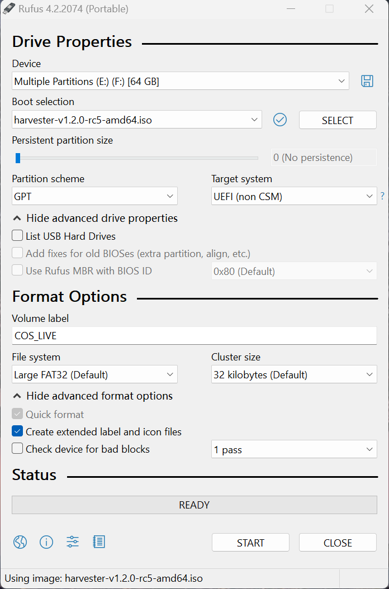
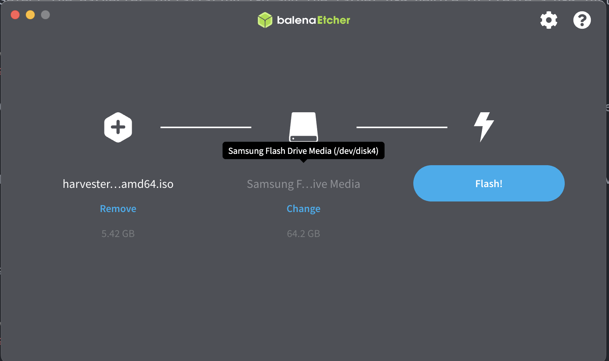
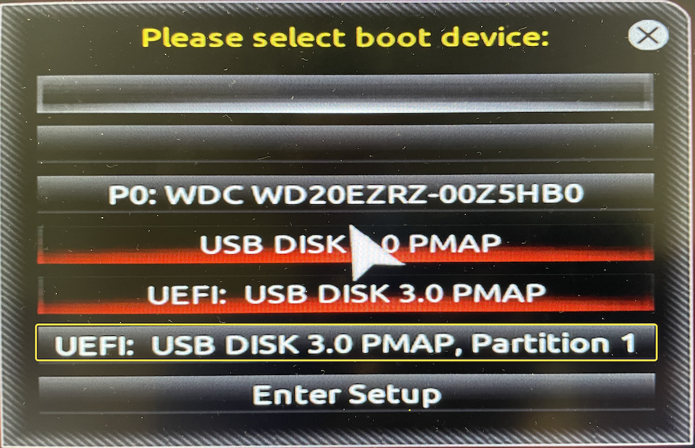
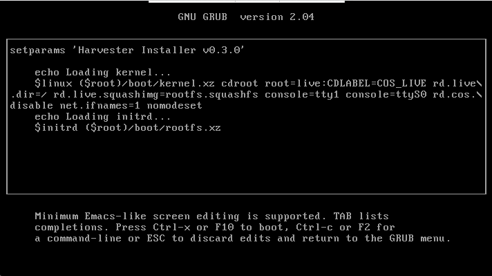
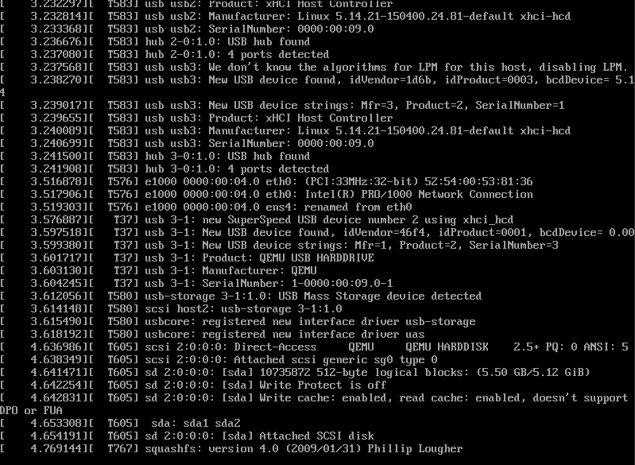
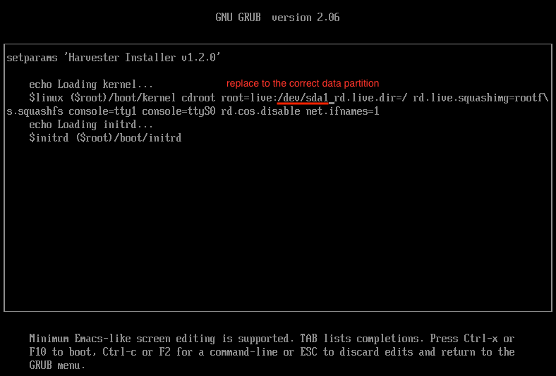

Installation USB
Créer une clé de stockage USB amorçable
Il existe plusieurs façons de créer une clé de stockage USB d’installation.
|
Problème connu: Pour l’image ISO v1.2.0, il existe un problème connu où l’installation interactive de l’ISO se bloque lors de l’utilisation de la méthode USB. Pour résoudre ce problème, vous pouvez utiliser l’ISO correctif. Cette version corrigée ne corrige que l’étiquette de partition, et il n’y a pas d’autres changements. Vous pouvez également utiliser le fichier sha512 associé pour vérifier l’ISO. Référez-vous au [Interactive ISO hangs with the USB installation method] pour plus de détails et une solution de contournement. Peu importe l’outil que vous utilisez, créer un dispositif amorçable efface les données de votre clé USB. Veuillez sauvegarder toutes les données sur votre clé USB avant de créer un dispositif amorçable. |
Rufus
Rufus vous permet de créer une image ISO sur votre clé de stockage USB sur un ordinateur Windows.
-
Ouvrez Rufus et insérez une clé de stockage USB vierge dans votre ordinateur.
-
Rufus détecte automatiquement votre clé de stockage USB. Sélectionnez le dispositif USB que vous souhaitez utiliser dans le menu déroulant Dispositif.
-
Pour Sélection de démarrage, choisissez Sélectionner et trouvez l’image ISO que vous souhaitez graver sur la clé de stockage USB.

Si vous utilisez des versions plus anciennes de Rufus,
DD modeetISO modefonctionnent tous les deux.DD modefonctionne exactement comme la commandeddsous Linux, et vous ne pouvez pas parcourir les partitions après avoir créé un dispositif amorçable.ISO modecrée automatiquement des partitions sur votre dispositif et copie des fichiers dans ces partitions, et vous pouvez parcourir ces partitions même après avoir créé un dispositif amorçable.
balenaEtcher
balenaEtcher prend en charge l’écriture d’une image sur une clé de stockage USB sur la plupart des distributions Linux, macOS et Windows. Il dispose d’une interface graphique et est facile à utiliser.
-
Sélectionnez l’image ISO.
-
Sélectionnez le périphérique USB cible pour créer une clé de stockage USB d’installation.

dd commande
Vous pouvez utiliser la commande 'dd' sur Linux ou d’autres plateformes pour créer une clé de stockage USB d’installation. Assurez-vous de choisir le bon périphérique ; la commande suivante efface les données sur le périphérique sélectionné.
# sudo dd if=<path_to_iso> of=<path_to_usb_device> bs=64kProblèmes connus
Un GRUB _ texte est affiché, mais rien ne se passe lors du démarrage à partir d’une clé de stockage USB d’installation.
Si vous utilisez le mode UEFI, essayez de démarrer à partir de la partition de démarrage UEFI sur le périphérique USB plutôt qu’à partir du périphérique USB lui-même. Par exemple, sélectionnez le UEFI: USB disk 3.0 PMAP, Partition 1 pour démarrer. La représentation varie d’un système à l’autre.

Problème graphique
Les firmwares de certaines cartes graphiques ne sont pas fournis dans v0.3.0.
Vous pouvez appuyer sur e pour modifier l’entrée du menu GRUB et ajouter nomodeset aux paramètres de démarrage. Appuyez sur Ctrl + x pour démarrer.

L’installateur n’est pas affiché
Si une clé de stockage USB démarre, mais que vous ne pouvez pas voir l’installateur, essayez l’une des solutions suivantes :
-
Branchez la clé de stockage USB dans un port USB 2.0.
-
Pour la version
v0.3.0ou supérieure, retirez le paramètreconsole=ttyS0lors du démarrage. Appuyez surepour modifier l’entrée du menu GRUB et retirer le paramètreconsole=ttyS0.
L’ISO interactive se bloque avec la méthode d’installation USB
Lors de l’installation à partir d’une clé de stockage USB avec l’image ISO v1.2.0 (créée par des outils comme balenaEtcher, dd, etc.), le processus d’installation peut se bloquer lors du chargement initial de l’image car une étiquette requise est manquante sur la partition de démarrage. Par conséquent, l’installation ne peut pas monter correctement la partition de données, ce qui bloque certaines vérifications dans dracut.
Si vous rencontrez ce problème, vous observerez la sortie similaire suivante, et le processus se bloquera pendant au moins 50 minutes (la valeur de délai par défaut de dracut).

Solution provisoire
Pour résoudre ce problème, vous pouvez modifier manuellement la partition root comme suit :
# Replace the `CDLABEL=COS_LIVE` with your USB data partition. Usually, your USB data partition is the first partition with the device name `sdx` that hangs on your screen.
# Original
$linux ($root)/boot/kernel cdroot root=live:CDLABEL=COS_LIVE rd.live.dir=/ rd.live.squashimg=rootfs.squashfs console=tty1 console=ttyS0 rd.cos.disable net.ifnames=1
# Modified
$linux ($root)/boot/kernel cdroot root=live:/dev/sda1 rd.live.dir=/ rd.live.squashimg=rootfs.squashfs console=tty1 console=ttyS0 rd.cos.disable net.ifnames=1Le paramètre modifié devrait ressembler à ce qui suit :

Après avoir effectué cet ajustement, appuyez sur Ctrl + x pour initier le démarrage. Vous devriez maintenant entrer dans l’installateur comme d’habitude.